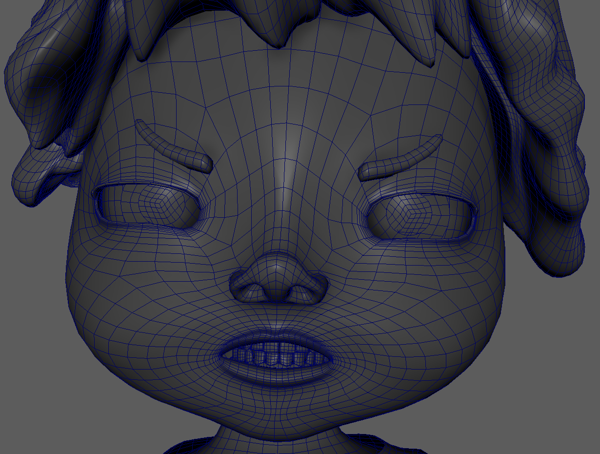
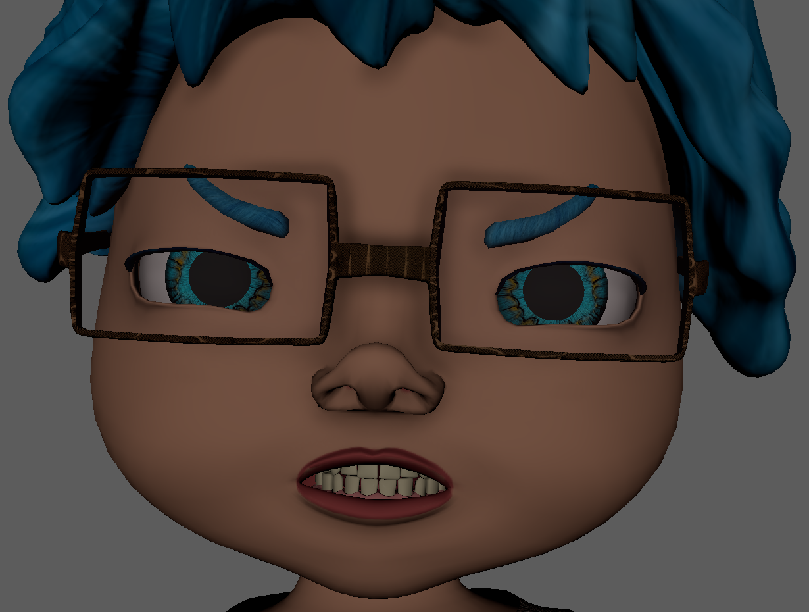
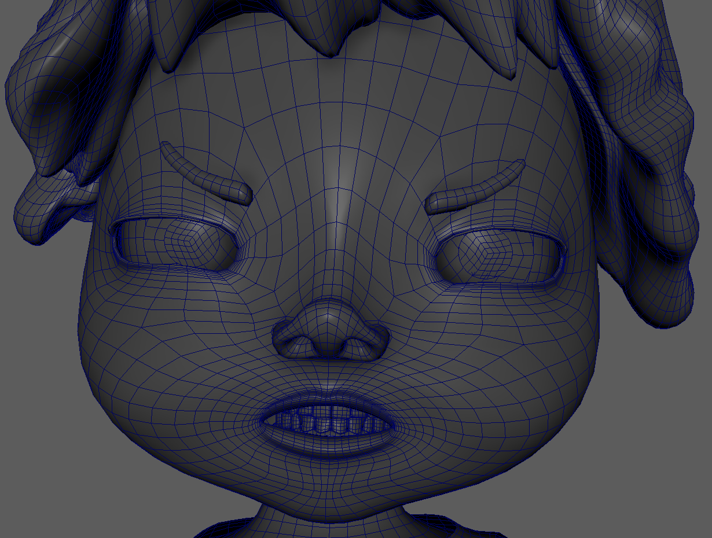
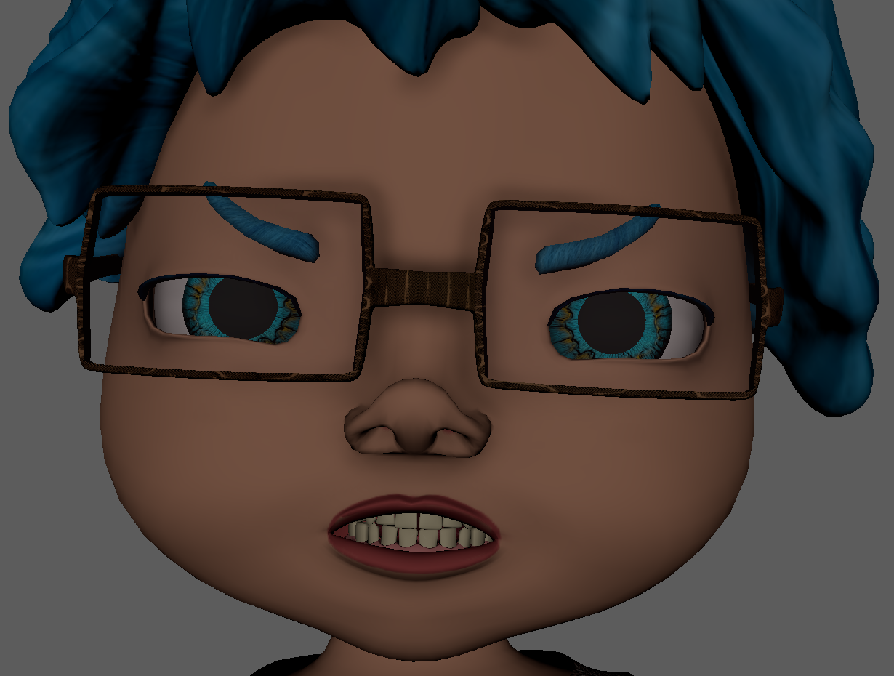

Personal Project Pipeline: A Structured Approach to Creative Development
Every project I undertake follows a systematic, methodical approach. Over time, I have refined this process into a structured workflow that helps me manage complex tasks without feeling overwhelmed. This structured approach not only streamlines my work but also ensures flexibility for revisions and future enhancements.
Capturing the Concept
My creative process often begins with a fleeting idea or a spark of inspiration. When I am struggling to come up with something, I turn to my children for ideas—their imaginative suggestions often serve as unique starting points. To ensure I do not lose these moments of inspiration, I document them immediately, whether through notes, sketches, or voice recordings. This initial step creates a reservoir of ideas that I can revisit later.
Expanding Through Research
Once I settle on an idea, I delve into research to flesh out its details. For instance, in developing my “Flower Children” characters, I explored 1970s fashion, culture, and aesthetics, even diving into my parents' yearbooks for authentic references. Research transforms my raw ideas into more nuanced designs and serves as a foundation for creating character backstories, environments, and personality traits. This preparation not only enriches the project but also provides a detailed roadmap in case I need to pause and return later.
Concept Art Development
With a solid conceptual framework, I move on to creating concept art. I start with hand-drawn sketches, as the tactile process helps me refine ideas without overthinking. These sketches serve as the basis for digital iterations, where I enhance the designs further. I also create turnarounds, action poses, and silhouette studies, ensuring the characters remain consistent and dynamic. This iterative process helps me achieve a polished design ready for modeling.
Enhancing the Concept Through Drafts
Throughout the concept phase, I save all sketches, notes, and digital drafts in an organized storage system. This archival habit allows me to revisit earlier stages of the project if I feel something was lost in later iterations. By maintaining detailed documentation, I make it easier to refine or pivot my designs when necessary.
Planning for Modeling and Rigging
Before diving into the modeling phase, I consider the technical requirements of the project. I outline naming conventions, controller attributes, and any custom expressions the rig may need. Documenting these details saves time during production and minimizes errors. This foresight also ensures that my workflow remains consistent and efficient.
Modeling and Texturing
I begin modeling by creating a low-poly version of the character or object, saving my progress incrementally to safeguard against crashes and allow for revisions. During breaks from modeling, I switch to working on textures in Substance Painter. This alternating workflow not only prevents fatigue but also provides fresh perspectives on both the model and the textures.
Once the low-poly model is finalized, I create a high-poly version for texture baking. These two versions are saved as separate files to maintain clarity and organization. I also ensure UV maps are clean and optimized, setting the stage for seamless rigging.
Rigging and Final Assembly
Rigging starts with referencing the low-poly model in a new Maya file to avoid performance issues during weight painting. As I rig, I revisit textures, ensuring the model's final appearance aligns with the original concept. This iterative process allows me to refine both the rigging and the visual elements until I am satisfied with the final product.

 



Continuous Improvement and Reflection
Each project is an opportunity to grow. Whether I am adding advanced features like XGen hair, refining rigging techniques, or experimenting with dynamic props, I challenge myself to push beyond my comfort zone. While not every attempt succeeds, I view setbacks as essential steps in the learning process.
Some projects, like my Flower Children, hold personal significance and evolve over time as my skills improve. By saving every stage of my process, I can revisit these projects with fresh insights, ensuring they continually benefit from my growing expertise.
This structured preproduction process has become the cornerstone of my creative workflow. By meticulously documenting each step, I not only make my projects manageable but also ensure they remain adaptable to new ideas and techniques. This habit has transformed fleeting inspirations into polished, professional creations. My most current version of Flower Children character 'Lulubell' whose creation process I have documented here can be found in my portfolio page or by following the link above.